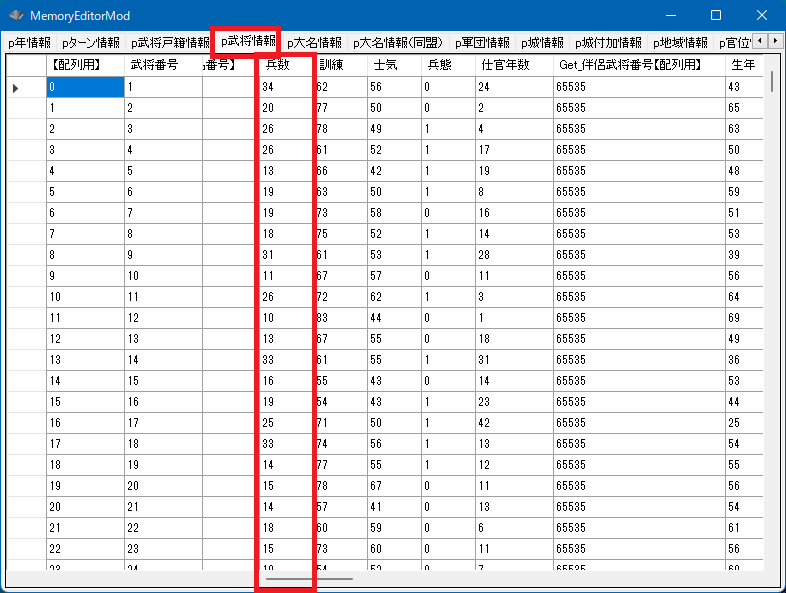
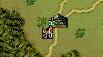

戦争中の武将の兵数は、メイン画面の武将の兵数と扱いは同じです。

p武将情報[ix].兵数
兵数が増減したことを画面上で(ゲーム内での兵数が増減した時と同じ方法で)表現したければ、
int Get_武将最大兵数(int 武将番号【配列用】)
対象の武将の「現在の状況での編成可能な最大兵数」を取得する
void 武将ユニット兵数描画更新《戦争画面》(int 武将番号【配列用】)
を呼び出してください。

画面上で数値をだすかださないかだけですので、わざわざ表示する必要がなければ、「武将ユニット兵数描画更新《戦争画面》」関数を呼び出す必要はありません。
void カスタム::On_残りターン変更《戦争画面》(int 残りターン数) {
番号リスト型 list = Get_出陣中の武将番号リスト【配列用】《表示中マップ》();
for(int iBushouID : list) {
if (p武将戸籍情報[iBushouID].顔番号 == 顔番号::長尾景虎) {
// 現在状況での長尾景虎の最大兵数
int max兵数 = Get_武将最大兵数(iBushouID);
if (p武将情報[iBushouID].兵数 < max兵数) {
// オーバーフローを避けるため一旦int
int h = p武将情報[iBushouID].兵数;
h += 10; // 兵数を10増やす
min(h, max兵数);
p武将情報[iBushouID].兵数 = h;
武将ユニット兵数描画更新《戦争画面》(iBushouID); // 兵数が変わったとわかるように、画面上で描画更新を演出する
}
}
}
}
On_被ダメージ時 を参照のこと。
「戦争 - 武将ユニットの兵数」に関する主な所は以上となります。 詳しくは「戦場情報型.h」や「武将情報型.h」などを参照してください。